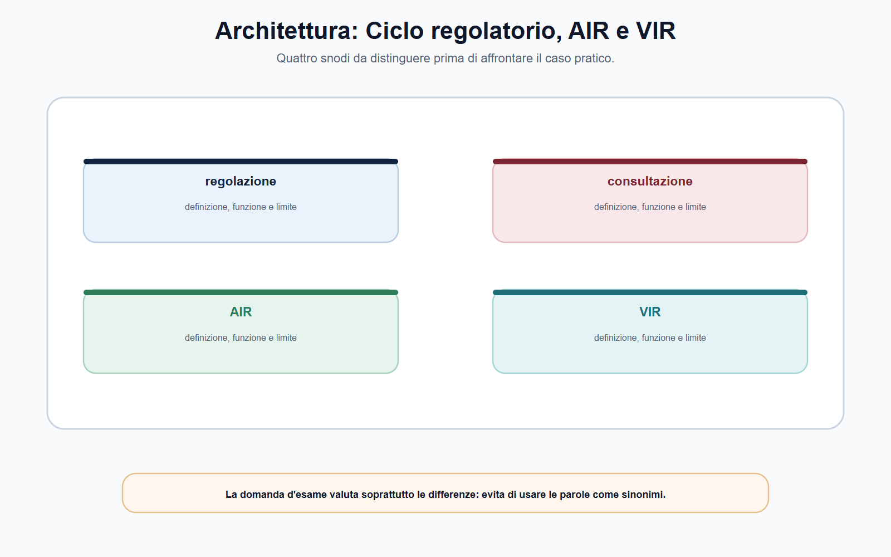
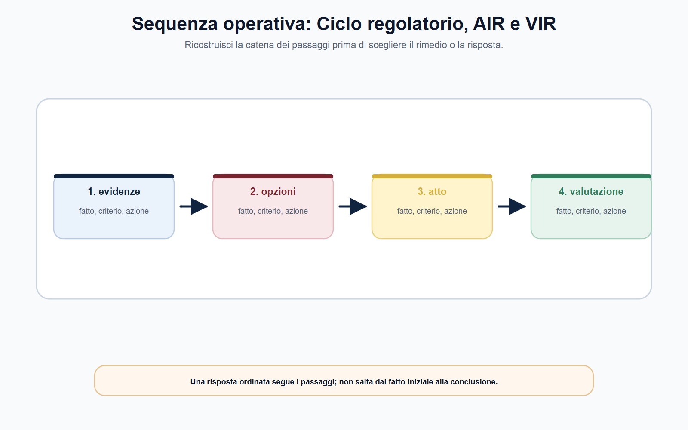
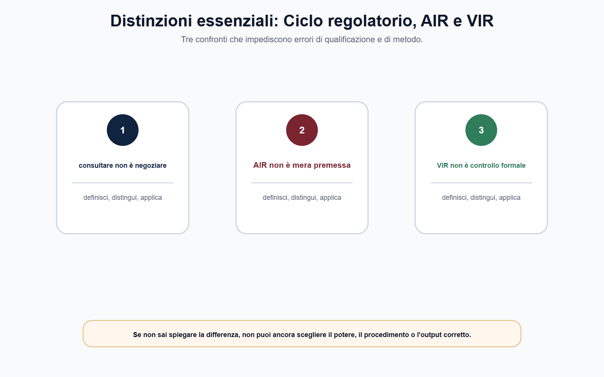
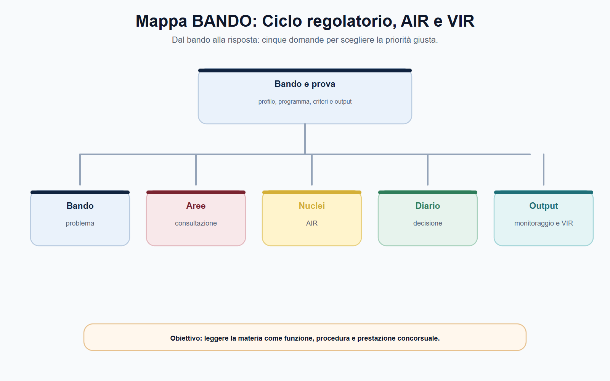

VOL-05 · Capitolo 04
M-FC05
Ciclo regolatorio,
consultazione, AIR e VIR
Una misura regolatoria non è soltanto una regola da pubblicare. Può incidere su prezzi, qualità, obblighi, accesso al mercato e investimenti. La domanda esigente non è «quale testo adottiamo?»: qual è il problema, quali evidenze lo dimostrano, quali soluzioni sono realistiche e come si verificherà se la scelta ha funzionato?
01 · Il problema in prova
La delibera non è il punto di partenza
Il ciclo regolatorio organizza le domande in un percorso. Non è una formula rigida uguale per tutte le Autorità, né una successione di adempimenti da compilare. È il metodo che collega potere attribuito, istruttoria, partecipazione, motivazione, attuazione e valutazione.
Che cosa sono i tre strumenti
La consultazione acquisisce contributi e dati. L’AIR analizza ex ante problema, opzioni e impatti. La VIR osserva ex post utilità, efficacia, efficienza ed effetti. Nessuno dei tre sostituisce gli altri.
A che serve in prova
A distinguere consultazione, AIR, monitoraggio e VIR; a spiegare perché la partecipazione non è un referendum; a impostare una mini-AIR senza inventare dati; a verificare la fonte procedimentale dell’ente prima di copiare un modello generale.
Una consultazione senza analisi raccoglie opinioni senza confrontare alternative. Un’AIR senza interlocuzione ignora informazioni rilevanti. Una decisione priva di monitoraggio e verifica resta immune dall’esperienza applicativa.
Come dimostra un’Autorità che una misura è necessaria, proporzionata, comprensibile e verificabile nel tempo?
Una delibera finale è l’esito di un percorso che deve restare leggibile, motivato e controllabile. Se parti dal testo già scelto, stai giustificando, non analizzando.
02 · Il ciclo
Una sequenza, non una formalità
La rappresentazione più utile è circolare. L’Autorità individua un problema, raccoglie elementi, confronta opzioni e consulta; adotta una decisione motivata, ne segue l’attuazione e verifica gli effetti. Da questa verifica può nascere manutenzione, correzione, semplificazione o un nuovo procedimento.
| Fase | Domanda | Prodotto |
|---|---|---|
| Problema | Quale disfunzione, rischio o fallimento richiede intervento? | Nota di inquadramento e base di competenza. |
| Evidenze | Quali dati, segnalazioni, analisi rendono il problema verificabile? | Fascicolo istruttorio e quadro informativo. |
| Opzioni | Quali alternative regolatorie e non regolatorie, inclusa l’ipotesi di non intervento? | Opzioni comparate. |
| Consultazione | Quali informazioni occorre acquisire dagli interessati? | Documento, contributi, sintesi istruttoria. |
| Decisione | Perché l’opzione è coerente con competenza, obiettivi e proporzionalità? | Atto motivato e pubblicato secondo la disciplina. |
| Monitoraggio e VIR | La regola è applicabile? Gli effetti corrispondono agli obiettivi? | Indicatori, valutazione ex post, proposta di tenuta, modifica o superamento. |
03 · Fonte
Non trasferire il D.P.C.M. 169/2017
Un atto generale di regolazione, un provvedimento individuale, un atto urgente, una misura tecnica o un parere non richiedono necessariamente lo stesso percorso. L’errore non sta nell’adattare il metodo; sta nel non motivare l’adattamento o nell’ignorare il regolamento dell’ente.
Che cos’è il D.P.C.M. n. 169/2017
Disciplina AIR, VIR e consultazioni per le amministrazioni statali. Esclude espressamente le Autorità amministrative indipendenti. Il suo valore, in questo modulo, è metodologico: aiuta a comprendere la logica ex ante ed ex post della qualità della regolazione.
A che serve in prova
A non copiare termini, moduli e obblighi statali sull’Autorità del bando. Per la procedura concreta si consultano legge istitutiva, regolamento procedimentale e atti organizzativi dell’ente competente.
ARERA usa documenti di consultazione per sottoporre orientamenti e ha aggiornato nel 2025 la propria disciplina AIR dopo un processo di consultazione. Il dato conferma che consultazione e analisi sono strumenti di istruttoria e accountability; non autorizza a estendere contenuti, termini o moduli ARERA a ogni Autorità.
04 · Consultazione
Ascoltare per decidere meglio
La consultazione pubblica è un passaggio istruttorio orientato alla qualità della decisione. Consente di acquisire costi di adeguamento, effetti sugli utenti, criticità tecniche, condizioni di mercato, alternative e conseguenze non previste. Non è una delega della decisione e non è un referendum.
| Elemento | Funzione | Controllo del funzionario |
|---|---|---|
| Oggetto e presupposti | Delimitano il problema. | Il problema è formulato in modo verificabile? |
| Base di competenza | Collega l’iniziativa al potere. | Sono indicate le fonti rilevanti? |
| Evidenze e opzioni | Rendono controllabile il ragionamento e mirati i contributi. | Dati, limiti e che cosa può cambiare sono chiari? |
| Quesiti, termini, trattamento | Trasformano l’ascolto in istruttoria, con parità di accesso. | Le domande raccolgono informazioni utili? Canale, scadenza, riservatezza? |
Se la maggioranza dei partecipanti respinge l’opzione, l’Autorità non perde il potere di adottarla. Deve valutare i contributi pertinenti e motivare secondo competenza, evidenze, interesse pubblico e disciplina applicabile. Il dissenso maggioritario è un elemento istruttorio, non un voto sostitutivo.
05 · Architettura
Consultazione e AIR non coincidono
Un documento di consultazione efficace non deve essere lungo per apparire autorevole. Deve rendere comprensibile il problema, indicare la base, presentare orientamenti o opzioni, formulare quesiti pertinenti e delimitare il perimetro. L’AIR, invece, confronta alternative e ricadute attese prima della scelta.

Quattro snodi da distinguere: problema regolatorio, consultazione, AIR, VIR. La domanda d’esame valuta le differenze, non i sinonimi.
06 · AIR
Valutare prima di regolare
L’Analisi di impatto della regolazione è una metodologia ex ante. Serve a capire se e come intervenire. Un’AIR seria non parte dalla soluzione già scelta per cercare argomenti a sostegno. La forma dipende da rilevanza, complessità e quadro dell’ente: non ogni provvedimento richiede la stessa profondità, ma il nucleo logico resta.
| Campo della mini-AIR | Domanda |
|---|---|
| Problema e obiettivo | Quale comportamento, ostacolo o rischio? Quale risultato concreto, compatibile con il potere? |
| Destinatari | Chi sostiene obblighi, costi, benefici o rischi? |
| Opzioni | Quali alternative, compresa la conferma della disciplina vigente se ragionevole? |
| Impatti, evidenze, limiti | Effetti su utenti, operatori, concorrenza, organizzazione e controlli; da quali fonti; quali incertezze restano. |
| Consultazione e monitoraggio | Quali informazioni mancanti chiedere? Con quali indicatori seguire la scelta? |
Non significa scegliere sempre la misura meno onerosa in astratto. Significa verificare che la misura sia adeguata all’obiettivo, necessaria rispetto alle alternative e non eccessiva rispetto agli effetti. L’AIR fornisce la struttura informativa; la decisione resta dell’Autorità competente.
07 · Sequenza
Evidenze, opzioni, atto, valutazione
Una risposta ordinata non salta dal fatto iniziale alla conclusione. Prima le evidenze rendono il problema verificabile; poi le opzioni si confrontano; poi l’atto motiva la scelta; poi la valutazione guarda gli effetti.

Ricostruisci la catena dei passaggi prima di scegliere il rimedio o la risposta. Non invertire AIR e VIR.
08 · Dopo la decisione
Monitoraggio e VIR
Una regolazione può essere ben progettata e produrre effetti diversi da quelli attesi. Operatori che si adeguano in modi imprevisti, costi superiori, innovazione che rende la misura inadeguata: il ciclo non termina con la pubblicazione dell’atto.
| Strumento | Tempo | Domanda centrale | Rischio |
|---|---|---|---|
| AIR | Prima della decisione | Quale opzione produce l’effetto atteso con impatti ragionevoli? | Giustificare una scelta già decisa. |
| Monitoraggio | Durante l’attuazione | Che cosa sta accadendo dopo l’entrata in vigore? | Raccogliere dati senza usarli. |
| VIR | Dopo un periodo significativo | La misura è ancora utile, efficace ed efficiente? | Limitarsi a riepilogare l’attività svolta. |
«AIR e VIR sono due nomi per la stessa analisi di impatto.» L’AIR è ex ante e confronta opzioni e impatti attesi; la VIR è ex post e valuta risultati ed effetti della regolazione già applicata. Dire che «la VIR misura gli impatti prima di adottare l’atto» inverte il ciclo.
09 · Distinzioni
Prima di rispondere, confronta
Consultazione e AIR non sono equivalenti; monitoraggio e VIR non coincidono. Se non sai spiegare la differenza, non puoi ancora scegliere il procedimento o l’output.

Tre confronti da tenere fermi: ascolto non è voto; AIR non è VIR; monitoraggio non è ancora valutazione ex post.
10 · Fascicolo
Quattro piani da non confondere
Consultazione, AIR e VIR sono anche strumenti di accountability. Rendono più chiaro perché l’Autorità abbia scelto una misura, quali informazioni abbia considerato, quali osservazioni abbia accolto o superato e come intenda controllare l’attuazione. Questo non impone di pubblicare indiscriminatamente ogni documento: pubblicità, accesso, riservatezza e informazioni sensibili restano disciplinati dalle fonti applicabili.
Fatti e dati
Elementi disponibili, con i loro limiti. Non coincidono con le osservazioni ricevute.
Osservazioni
Contributi della consultazione: patrimonio istruttorio, non voto e non prova automatica.
Valutazioni
Analisi dell’ufficio: AIR, impatti, proporzionalità, limiti conoscitivi.
Decisione
Atto dell’organo competente, distinto da proposta e da dati grezzi.
Va trattata come conclusione da motivare, non come etichetta. La scheda è completa quando un secondo lettore può ricostruire il percorso senza conoscere l’intenzione di chi l’ha compilata.
11 · BANDO
Metodo e fonte, insieme
Quando il programma richiama regolazione, consultazione, qualità della regolazione, analisi di impatto o accountability, prepara una risposta che unisca il ciclo e la fonte dell’ente.
| Voce | Output da allenare |
|---|---|
| Procedimenti regolatori | Schema del ciclo in sette passaggi. |
| Consultazione | Matrice stakeholder–informazione richiesta. |
| AIR | Mini-AIR in una pagina. |
| VIR e monitoraggio | Tabella obiettivi–indicatori–esiti. |
Il ciclo parte dal problema e termina con la verifica degli effetti, non con la sola adozione della delibera.

12 · Caso guidato
Nuovo standard minimo di qualità
L’Autorità valuta un nuovo standard minimo per un servizio regolato. Gli utenti segnalano ritardi e informazioni poco comprensibili; gli operatori sostengono che un obbligo uniforme avrebbe costi elevati e non terrebbe conto delle differenze territoriali.
| Passaggio | Ragionamento |
|---|---|
| Non partire dal testo | Né «introduciamo lo standard» né limitarsi a raccogliere le lettere. Definire il problema con evidenze: frequenza dei ritardi, tipologia, utenti, andamento, limiti dei dati. |
| Obiettivo | Ridurre i ritardi, migliorare l’informazione, o entrambi? |
| Mini-AIR | Tre opzioni: disciplina vigente con più vigilanza; obblighi informativi graduati; standard minimo con monitoraggio e correttivi. |
| Consultazione | Chiedere dati su costi, modalità tecniche, effetti per utenti vulnerabili, indicatori misurabili. Non «siete favorevoli?». |
| Dopo l’atto | Indicatori su tempi, reclami, correttezza delle informazioni, costi. Il monitoraggio alimenta una VIR: ha migliorato il servizio? Ha prodotto oneri non giustificati? Va modificata? |
13 · Verifica
Due domande da saper spiegare
Distingua consultazione, AIR e VIR nel ciclo di un’Autorità indipendente.
Il ciclo collega problema, evidenze, opzioni, consultazione, decisione, attuazione, monitoraggio e valutazione. La consultazione ha funzione istruttoria: acquisisce dati e proposte, non sostituisce la decisione motivata. L’AIR è ex ante: problema, alternative, impatti, proporzionalità. Il monitoraggio segue l’applicazione; la VIR è ex post. La procedura concreta si legge nella fonte dell’ente.
La maggioranza dei partecipanti può impedire l’adozione?
No. La consultazione non è un voto. L’Autorità valuta i contributi pertinenti e motiva la scelta. Il dissenso maggioritario è un elemento istruttorio rilevante, non un potere sostitutivo della decisione.
14 · Mini-esercizio
Mini-AIR in dieci righe
Problema: «Gli utenti segnalano difficoltà nel comprendere le informazioni contrattuali di un servizio regolato». Controlla il risultato con una domanda: hai spiegato perché un’opzione potrebbe essere preferibile, o hai soltanto descritto la tua soluzione?
| Campo | Appunto da completare |
|---|---|
| Problema ed evidenze | Che cosa manca per rendere il fatto verificabile. |
| Obiettivo e destinatari | Risultato compatibile con il potere; chi sostiene costi e benefici. |
| Tre opzioni | Disciplina vigente; obblighi informativi semplificati; standard minimi più monitoraggio. |
| Quesiti e indicatore | Domande per la consultazione; indicatore per il monitoraggio; domanda per la VIR. |
Torna alle alternative e agli impatti. Una AIR che descrive solo la soluzione scelta è una relazione di accompagnamento, non uno strumento decisionale.
15 · Controllo incrociato
Tre prospettive, una scheda
Candidato
Hai definito il problema regolatorio senza dilungarti su nozioni estranee? Hai tenuto distinta l’Autorità dal ministero e dalla disciplina statale del D.P.C.M. 169/2017?
Istruttore
La distinzione fra consultazione e AIR poggia su documenti? Decisione e motivazione collegano fatti, competenza, sequenza e conseguenza?
Decisore
Monitoraggio e VIR sono collegati al potere pertinente? La tracciabilità è una conclusione motivata, non un’etichetta?
Termini, moduli e discipline interne dell’ente si ricontrollano nella fonte vigente. Un esempio ARERA datato non si trasferisce automaticamente ad AGCOM o AGCM.
16 · Da tenere ferme
Cinque regole, con il perché
1. Il ciclo parte dal problema e termina con la verifica degli effetti, non con la sola adozione della delibera.
2. La consultazione acquisisce contributi utili ma non sostituisce la decisione motivata: non è un referendum.
3. L’AIR valuta ex ante opzioni e impatti; il monitoraggio segue l’attuazione; la VIR valuta ex post utilità, efficacia ed efficienza.
4. Il D.P.C.M. n. 169/2017 è un riferimento metodologico e esclude le Autorità indipendenti: la procedura concreta si legge nelle regole dell’ente.
5. Nel fascicolo restano distinti fatti e dati, osservazioni, valutazioni dell’ufficio, proposta e decisione. Confondere i piani genera opacità.
Prossimo capitolo
Vigilanza, istruttoria, ispezioni, dati e prova
La misura regolatoria ha un ciclo. Il capitolo successivo apre il fascicolo di vigilanza: dalla segnalazione all’evidenza, senza trasformare un dato anomalo in una violazione già accertata.